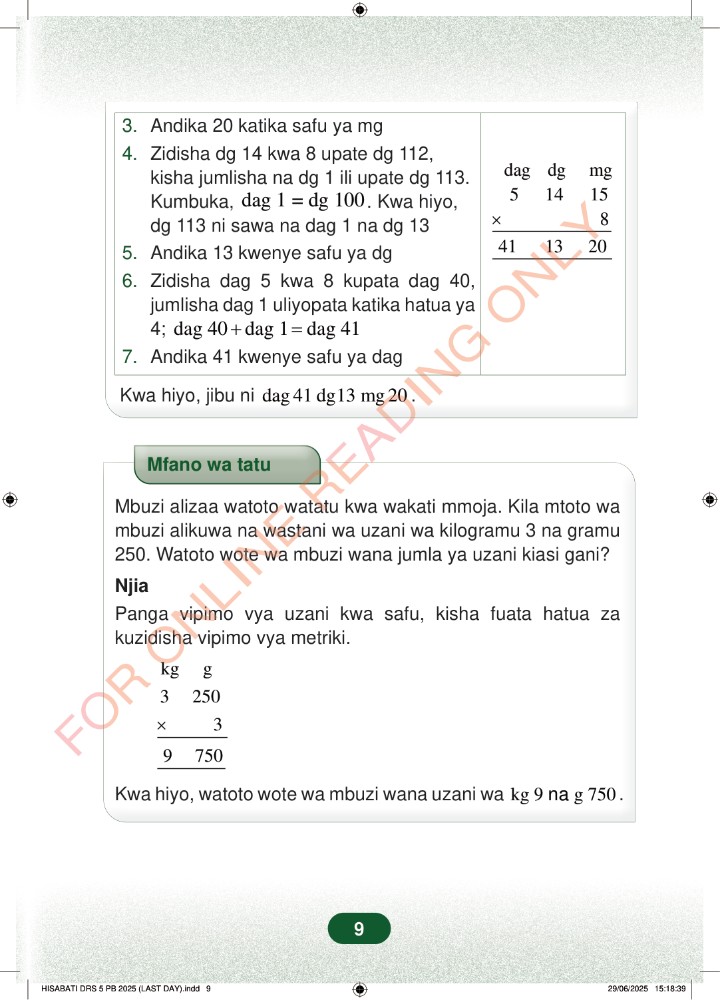

dagdgmg514158411320×3.Andika 20 katika safu ya mg4.Zidisha dg 14 kwa 8 upate dg 112,kisha jumlisha na dg 1 ili upate dg 113.Kumbuka,dag 1 = dg 100. Kwa hiyo,dg 113 ni sawa na dag 1 na dg 135.Andika 13 kwenye safu ya dg6.Zidisha dag 5 kwa 8 kupata dag 40,jumlisha dag 1 uliyopata katika hatua ya4;dag 40dag 1dag 41+=7.Andika 41 kwenye safu ya dagKwa hiyo, jibu nidag 41 dg13 mg 20.Mfano wa tatuMbuzi alizaa watoto watatu kwa wakati mmoja. Kila mtoto wambuzi alikuwa na wastani wa uzani wa kilogramu 3 na gramu250. Watoto wote wa mbuzi wana jumla ya uzani kiasi gani?NjiaPanga vipimo vya uzani kwa safu, kisha fuata hatua zakuzidisha vipimo vya metriki.×kgg325039750Kwa hiyo, watoto wote wa mbuzi wana uzani wakg 9g 750na.9
dag dg mg 5 14 15 8 41 13 20 ×
3. Andika 20 katika safu ya mg 4. Zidisha dg 14 kwa 8 upate dg 112, kisha jumlisha na dg 1 ili upate dg 113. Kumbuka, dag 1 = dg 100 . Kwa hiyo, dg 113 ni sawa na dag 1 na dg 13 5. Andika 13 kwenye safu ya dg 6. Zidisha dag 5 kwa 8 kupata dag 40, jumlisha dag 1 uliyopata katika hatua ya 4; dag 40 dag 1 dag 41 + =
7. Andika 41 kwenye safu ya dag
Kwa hiyo, jibu ni dag 41 dg13 mg 20 .
Mfano wa tatu
Mbuzi alizaa watoto watatu kwa wakati mmoja. Kila mtoto wa mbuzi alikuwa na wastani wa uzani wa kilogramu 3 na gramu 250. Watoto wote wa mbuzi wana jumla ya uzani kiasi gani?
Njia Panga vipimo vya uzani kwa safu, kisha fuata hatua za kuzidisha vipimo vya metriki.
×
kg g 3 250 3
9 750
Kwa hiyo, watoto wote wa mbuzi wana uzani wa kg 9 g 750 na .
9
Hatua za kuzidisha 5 dag 14 dg 15 mg mara 8. Jibu linaandikwa kuwa dag 41, dg 13 na mg 20.3. Andika 20 katika safu ya mg4. Zidisha dg 14 kwa 8 upate dg 112, kisha jumlisha na dg 1 ili upate dg 113.Kumbuka, dag 1 = dg 100.Kwa hiyo, dg 113 ni sawa na dag 1 na dg 135. Andika 13 kwenye safu ya dg6. Zidisha dag 5 kwa 8 kupata dag 40, jumlisha dag 1 uliyopata katika hatua ya 4; dag 40 + dag 1 = dag 417. Andika 41 kwenye safu ya dagKwa hiyo, jibu ni dag 41 dg13 mg 20.Mfano wa tatu unaonyesha watoto 3 wa mbuzi, kila mmoja akiwa na uzani wa kg 3 na g 250. Ukizidisha kwa 3, jumla ya uzani ni kg 9 na g 750.Mfano wa tatuMbuzi alizaa watoto watatu kwa wakati mmoja.Kila mtoto wa mbuzi alikuwa na wastani wa uzani wa kilogramu 3 na gramu 250.Watoto wote wa mbuzi wana jumla ya uzani kiasi gani?NjiaPanga vipimo vya uzani kwa safu, kisha fuata hatua za kuzidisha vipimo vya metriki.Kwa hiyo, watoto wote wa mbuzi wana uzani wa kg 9 na g 750.